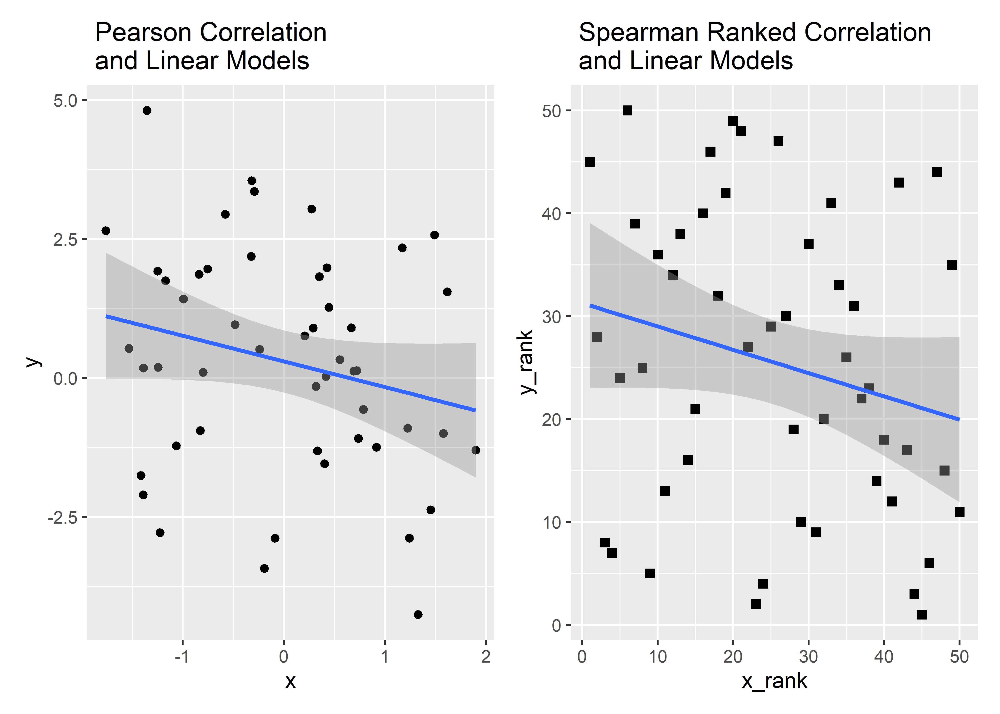

Linear Models: Comparing Means
References
- Common statistical tests are linear models (or: how to teach stats) by Jonas Kristoffer Lindeløv
- CheatSheet
- Common statistical tests are linear models: a work through by Steve Doogue
- Jeffrey Walker “Elements of Statistical Modeling for Experimental Biology”
- Text: Diez, David M & Barr, Christopher D & Çetinkaya-Rundel, Mine: OpenIntro Statistics
- Modern Statistics with R: From wrangling and exploring data to inference and predictive modelling by Måns Thulin
Structure of this document
We will follow the following structure: Each kind of Test is described in a separate Chapter. The Test Model is laid out in formula \(y = mx + c\) and in Code.
The Structure looks like this:
Test
Model
Explanation, formula etc.
Code
With Toy Data; Graphs
Example
With another “real world” data set; Graphs
Data
Sample Values
Most examples in this exposition are based on three “imaginary” samples, \(x, y, y2\). Each is normally distributed and made up of 50 observations.
We start by creating a function that will allow us to produce samples of a given size (N) with a specified mean (mu) and standard deviation (sd): Note: this gives a matrix of numbers, as opposed to a vector using rnorm by itself. The data are created both in vector form and tibble form for flexibility of use in diverse packages and formulae in what follows.
We create three variables: x ( explanatory) and y, y2 ( dependent ).
set.seed(40) # for replication
# Data as vectors ( for t.tests etc)
x <- rnorm_fixed(50, mu = 0.0, sd = 1) #explanatory
y <- rnorm_fixed(50, mu = 0.3, sd = 2) # dependent #1
y2 <- rnorm_fixed(50, mu = 0.5, sd = 1.5) # dependent #2
# Make a tibble with all variables
mydata_wide <- tibble(x = x, y = y, y2 = y2)
# Long form data
mydata_long <-
mydata_wide %>%
pivot_longer(., cols = c(x,y,y2),
names_to = "group",
values_to = "value")
# Long form data with only dependent variables
mydata_long_y <-
mydata_wide %>%
select(-x) %>%
pivot_longer(., cols = c(y,y2),
names_to = "group",
values_to = "value")
mydata_wide“Signed Rank” Values
Most statistical tests use the actual values of the data variables. However, in some non-parametric statistical tests, the data are used in rank-transformed sense/order. In some cases the signed-rank of the data values is used instead of the data itself.
Signed Rank is calculated as follows:
1. Take the absolute value of each observation in a sample
2. Place the ranks in order of (absolute magnitude). The smallest number has rank = 1 and so on.
3. Give each of the ranks the sign of the original observation ( + or - )
Plotting Original and Signed Rank Data
A quick plot:
p1 <- ggplot(mydata_long,aes(x = group, y = value)) +
geom_jitter(width = 0.02, height = 0,aes(colour = group), size = 4) +
geom_segment(data = mydata_wide, aes(y = 0, yend = 0,
x = .75,
xend = 1.25 )) +
geom_text(aes(x = 1, y = 0.5, label = "0")) +
geom_segment(data = mydata_wide, aes(y = 0.3, yend = 0.3,
x = 1.75 ,
xend = 2.25 )) +
geom_text(aes(x = 2, y = 0.6, label = "0.3")) +
geom_segment(data = mydata_wide, aes(y = 0.5, yend = 0.5,
x = 2.75,
xend = 3.25 )) +
geom_text(aes(x = 3, y = 0.8, label = "0.5")) +
labs(title = "Original Data") +
ylab("Response Variable")
p2 <- mydata_long %>%
group_by(group) %>%
mutate( s_value = signed_rank(value)) %>%
ggplot(., aes(x = group, y = s_value)) +
geom_jitter(width = 0.02, height = 0,aes(colour = group), size = 4) +
stat_summary(fun = "mean", geom = "point", colour = "red",
size = 8) +
labs(title = "Signed Rank of Data") +
ylab("Signed Rank of Response Variable")
patchwork::wrap_plots(p1,p2, nrow = 1, guides = "collect")
How does Sign-Rank data work?
TBD: need to add some explanation here.
The Linear ( Regression ) Model
The premise here is that many common statistical tests are special cases of the linear model.
A linear model estimates the relationship between one continuous or ordinal variable (dependent variable or “response” ) and one or more other variables ( explanatory variable or “predictors” ). It is assumed that the relationship is linear:
\[ y = \beta_0 + \beta_1 *x \] \(\beta_0\) is the intercept and \(\beta_1\) is the slope of the linear fit, that predicts the value of y based the value of x. Each prediction leaves a small “residual” error between the actual and predicted values. \(\beta_0\) and \(\beta_1\) are calculated based on minimizing the sum of squares of these residuals, and hence this method is called “ordinary least squares” regression.

The net area of all the shaded squares is minimized in the calculation of \(\beta_0\) and \(\beta_1\). It is also possible that there is more than one explanatory variable: this is multiple regression.
\[ y = \beta_0 + \beta_1*x_1 + \beta_2*x_2 ...+ \beta_n*x_n \]
where each of the \(\beta_i\) are slopes defining the relationship between y and \(x_i\). Together, the RHS of that equation defines an n-dimensional plane.
As per Lindoloev, many statistical tests, going from one-sample t-tests to two-way ANOVA, are special cases of this system.
Linear Models as Hypothesis Tests
Using linear models is based on the idea of Testing of Hypotheses. The Hypothesis Testing method typically defines a NULL Hypothesis where the statements read as “there is no relationship” between the variables at hand, explanatory and responses. The Alternative Hypothesis typically states that there is a relationship between the variables.
Accordingly, in fitting a linear model, we follow the process as follows: With \(y = \beta_0 + \beta_1 *x\)
- Make the following hypotheses: \[ NULL\ Hypothesis\ H_0 => x\ and\ y\ are\ unrelated.\ (\beta_1 = 0) \] \[ Alternate\ Hypothesis\ H_1 => x\ and\ y\ are\ linearly\ related\ (\beta_1 \ne 0) \]
- We “assume” that \(H_0\) is true.
- We calculate \(\beta_1\).
- We then find probability p that [\(\beta_1 = Estimated\ Value\)] when the NULL Hypothesis is assumed TRUE. This is the p-value. If that probability is p>=0.05, we say we “cannot reject” \(H_0\) and there is unlikely to be significant linear relationship.
However, if p<= 0.05 can we reject the NULL hypothesis, and say that there could be a significant linear relationship,because \(\beta_1 = Estimated\ Value\) by mere chance under \(H_0\) is very small.
Linear Models in R
lm() is the function to create linear models in R. In R we are lazy and write :
\[ y \sim 1 + x\\ \] \[ which\ reads\ like\\ \] \[ y = 1*number + x* another\ number \]
Note: there are very many ways in which linear models can be coded in R. See Vito Ricci on CRAN.
Call:
lm(formula = y ~ 1 + x, data = mydata_wide)
Residuals:
Min 1Q Median 3Q Max
-3.93980 -1.09967 0.12548 1.27904 3.88372
Coefficients:
Estimate Std. Error t value Pr(>|t|)
(Intercept) 0.30000 0.27799 1.0792 0.2859
x -0.46355 0.28081 -1.6507 0.1053
Residual standard error: 1.9657 on 48 degrees of freedom
Multiple R-squared: 0.05372, Adjusted R-squared: 0.034006
F-statistic: 2.725 on 1 and 48 DF, p-value: 0.10532Since the p-value is >=0.05, we fail to reject the NULL Hypothesis that there is no relationship between x and y.
Assumptions in Linear Models
- L: \(\color{blue}{linear}\) relationship
- I: Errors are independent (across observations)
-
N: y is \(\color{red}{normally}\) distributed at each “level” of
-
E: equal variance at all levels of x. No heteroscedasticity.

Let us now see which standard statistical tests can be re-formulated as Linear Models.
Tests for Correlation
Correlation r is a measure of strength and direction of linear association between two variables. r is between [-1,+1], with 0 implying no association/correlation.
From this definition, the linear model lends itself in a straightforward way as a model to interpret correlation. Intuitively, the slope of the linear model could be related to the correlation between y and x.
Now we look at the numbers.
Pearson Correlation
Model
The model for Pearson Correlation tests is exactly the Linear Model:
\[ y = \beta_0 + \beta_1 * x \\ H_0: \beta_1 = 0 \]
See the Code section for further insights into the relationship between the Correlation Score and the Slope of the Linear Model.
Code
# Pearson (built-in test)
cor <- cor.test(y,x,method = "pearson") %>%
broom::tidy() %>% select(estimate, p.value)
# Linear Model
lin <- lm(y ~ 1 + x, data = mydata_wide) %>%
broom::tidy() %>% select(estimate, p.value)
# Scaled linear model
lin_scl <- lm(scale(y) ~ 1 + scale(x), data = mydata_wide) %>%
broom::tidy() %>% select(estimate, p.value)
print(cor)# A tibble: 1 × 2
estimate p.value
<dbl> <dbl>
1 -0.232 0.105# A tibble: 2 × 2
estimate p.value
<dbl> <dbl>
1 0.3 0.286
2 -0.464 0.105# A tibble: 2 × 2
estimate p.value
<dbl> <dbl>
1 -9.06e-17 1
2 -2.32e- 1 0.105# A tibble: 5 × 2
estimate p.value
<dbl> <dbl>
1 -2.32e- 1 0.105
2 3 e- 1 0.286
3 -4.64e- 1 0.105
4 -9.06e-17 1
5 -2.32e- 1 0.105Notes: 1. The p-value for Pearson Correlation and that for the slope in the linear model is the same ( 0.1053 ). Which means we cannot reject the NULL hypothesis of “no relationship”.
- Here is the relationship between the slope and correlation:
\[ Slope\ \beta_1 = \frac{sd_y}{sd_x} * r \]
When both x and y have the same standard deviation, the slope and correlation are the same. Here, since x has twice the sd of y, the ratio of slope = -0.4635533 to r = -0.2317767 is 0.5. Hence a linear model using scale() for both variables will show slope = r.
Slope_Scaled: -0.2317767 = Correlation: -0.2317767
Example
We choose to look at the gpa_study_hours dataset. It has two numeric columns gpa and study_hours:
Rows: 193
Columns: 2
$ gpa <dbl> 4.000, 3.800, 3.930, 3.400, 3.200, 3.520, 3.680, 3.400, 3.…
$ study_hours <dbl> 10, 25, 45, 10, 4, 10, 24, 40, 10, 10, 30, 7, 15, 60, 10, …# Checks for Normal/Symmetric distributions
p1 <- ggplot(gpa_study_hours) + geom_histogram(aes(gpa))
p2 <- ggplot(gpa_study_hours) + geom_histogram(aes(study_hours))
p3 <- ggplot(gpa_study_hours) + geom_point(aes(gpa, study_hours))
(p1 + p2) / p3
Hmm…not normally distributed, and the relationship is also not linear, and there is some evidence of heterscedasticity, so Pearson correlation would not be the best idea here.
Call:
lm(formula = gpa ~ study_hours, data = gpa_study_hours)
Residuals:
Min 1Q Median 3Q Max
-0.95130 -0.19456 0.03879 0.21708 0.73872
Coefficients:
Estimate Std. Error t value Pr(>|t|)
(Intercept) 3.527997 0.037424 94.272 <2e-16 ***
study_hours 0.003328 0.001794 1.855 0.0652 .
---
Signif. codes: 0 '***' 0.001 '**' 0.01 '*' 0.05 '.' 0.1 ' ' 1
Residual standard error: 0.2837 on 191 degrees of freedom
Multiple R-squared: 0.01769, Adjusted R-squared: 0.01255
F-statistic: 3.44 on 1 and 191 DF, p-value: 0.06517
Pearson's product-moment correlation
data: gpa and study_hours
t = 1.8548, df = 191, p-value = 0.06517
alternative hypothesis: true correlation is not equal to 0
95 percent confidence interval:
-0.008383868 0.269196552
sample estimates:
cor
0.1330138 The correlation estimate is \(0.133\); the p-value is 0.065 and the confidence interval includes 0. Hence we fail to reject the NULL hypothesis that study_hours and gpa have no relationship.
We can use a later package ggstaplot to plot this:
Spearman Correlation
Model
In some cases the LINE assumptions may not hold. Nonlinear relationships, non-normally distributed data ( with large outliers ) and working with ordinal rather than continuous data: these situations necessitate the use of Spearman’s ranked correlation scores. (Ranked, not sign-ranked.)
\[ rank(y) = \beta_0 + \beta_1 * rank(x) \\ H_0: \beta_1 = 0 \]
Spearman correlation = Pearson correlation using the rank of the data observations. Let’s check how this holds for a our x and y data:
# Plot the data
p1 <- ggplot(mydata_wide, aes(x, y)) +
geom_point() +
geom_smooth(method = "lm") +
ggtitle(" Pearson Correlation\n and Linear Models")
# Plot ranked data
p2 <- mydata_wide %>%
mutate(x_rank = rank(x),
y_rank = rank(y)) %>%
ggplot(.,aes(x_rank, y_rank)) +
geom_point(shape = 15, size = 2) +
geom_smooth(method = "lm") +
ggtitle(" Spearman Ranked Correlation\n and Linear Models")
patchwork::wrap_plots(p1,p2, nrow = 1, guides = "collect")
Slopes are almost identical, ~ 0.25.
Code
# Spearman
cor1 <- cor.test(y,x, method = "spearman") %>%
broom::tidy() %>% select(estimate, p.value)
# Pearson using ranks
cor2 <- cor.test(rank(y), rank(x), method = "pearson") %>%
broom::tidy() %>% select(estimate, p.value)
# Linear Models using rank
cor3 <- lm(rank(y) ~ 1 + rank(x),data = mydata_wide) %>%
broom::tidy() %>% select(estimate, p.value)
rbind(cor1, cor2, cor3) %>% print()# A tibble: 4 × 2
estimate p.value
<dbl> <dbl>
1 -0.227 1.13e- 1
2 -0.227 1.14e- 1
3 31.3 9.11e-10
4 -0.227 1.14e- 1Notes:
When ranks are used, the slope of the linear model (\(\beta_1\)) has the same value as the correlation coefficient ( \(\rho\) ).
Note that the slope from the linear model now has an intuitive interpretation: the number of ranks y changes for each change in rank of x. ( Ranks are “independent” of
sd)
Example
We examine the cars93 data, where the numeric variables of interest are weight and price.
cars93 %>%
ggplot(aes(weight, price)) +
geom_point() + geom_smooth(method = "lm", se = FALSE, lty = 2) +
labs(title = "Car Weight and Car Price have a nonlinear relationship")
Let us try a Spearman Correlation score for these variables, since the data are not linearly related and the variance of price also is not constant over weight
Call:
lm(formula = rank(price) ~ rank(weight), data = cars93)
Residuals:
Min 1Q Median 3Q Max
-20.0676 -3.0135 0.7815 3.6926 20.4099
Coefficients:
Estimate Std. Error t value Pr(>|t|)
(Intercept) 3.22074 2.05894 1.564 0.124
rank(weight) 0.88288 0.06514 13.554 <2e-16 ***
---
Signif. codes: 0 '***' 0.001 '**' 0.01 '*' 0.05 '.' 0.1 ' ' 1
Residual standard error: 7.46 on 52 degrees of freedom
Multiple R-squared: 0.7794, Adjusted R-squared: 0.7751
F-statistic: 183.7 on 1 and 52 DF, p-value: < 2.2e-16# Stats Plot
ggstatsplot::ggscatterstats(data = cars93, x = weight,
y = price,
type = "nonparametric",
title = "Cars93: Weight vs Price",
subtitle = "Spearman Correlation")
We see that using ranks of the price variable, we obtain a Spearman’s \(\rho = 0.882\) with a p-value that is very small. Hence we are able to reject the NULL hypothesis and state that there is a relationship between these two variables. The linear relationship is evaluated as a correlation of 0.882.
Tests on One Mean
A series of tests deal with one mean value of a sample. The idea is to evaluate whether that mean is representative of the mean of the underlying population.
This uses the Student’s t-test for parametric data and the Wilcoxon signed-rank test for non-parametric data.
Tests can involve a single sample or paired samples.
The Student’s t-test with one sample
Model
A single number predicts y:
\[ y = \beta_0 + \beta_1*x \\ \\and\ further \ actually\\ y = \beta_0 \]
and the second term vanishes, since “there is no x”: all the x-values are made equal to zero in the linear model !! The NULL Hypothesis therefore is:
\[ \ H_0: \beta_0 = 0 \]
This NULL Hypothesis makes sense, because in the accompanying linear model all values of the explanatory variable x are zero, and therefore the NULL Hypothesis for the model should be that y also should be zero mean. Note that if we want the NULL hypothesis to be that the mean is other than zero, we can use the lm(...., mu = some_number, ..) parameter in the command.
Code
If we compare the t.test with the appropriate lm model:
One Sample t-test
data: y
t = 1.0607, df = 49, p-value = 0.294
alternative hypothesis: true mean is not equal to 0
95 percent confidence interval:
-0.2683937 0.8683937
sample estimates:
mean of x
0.3
Call:
lm(formula = y ~ 1, data = mydata_wide)
Residuals:
Min 1Q Median 3Q Max
-4.5554 -1.4845 -0.0392 1.5559 4.5119
Coefficients:
Estimate Std. Error t value Pr(>|t|)
(Intercept) 0.3000 0.2828 1.061 0.294
Residual standard error: 2 on 49 degrees of freedom 2.5 % 97.5 %
(Intercept) -0.2683937 0.8683937The confidence intervals for both the t.test and the lm model are identical.
t-test confidence intervals: -0.2683937, 0.8683937
linear model confidence intervals: -0.2683937, 0.8683937
So even though y has a mean of 0.3, the confidence intervals straddle zero, and hence we cannot reject the NULL hypothesis that the true population, of which y is a sample, could have mean=0.
Example
Wilcoxon’s Signed-Rank Test
Since we are dealing with the mean, the sign of the rank becomes important to use, in the case of a non-parametric single mean test.
Model
\[ signed\_rank(y) = \beta_0 \\ H_0: \beta_0 = 0 \]
Code
Wilcoxon signed rank test with continuity correction
data: y
V = 754, p-value = 0.2628
alternative hypothesis: true location is not equal to 0
Call:
lm(formula = signed_rank(y) ~ 1, data = mydata_wide)
Coefficients:
(Intercept)
4.66
One Sample t-test
data: signed_rank(y)
t = 1.1277, df = 49, p-value = 0.265
alternative hypothesis: true mean is not equal to 0
95 percent confidence interval:
-3.644491 12.964491
sample estimates:
mean of x
4.66 We can plot the y data both original and ranked to see where the mean lies in each case. The approximation to the true $_0 ( is good when the number of observations N is >=50. Lindoloev has a simulation on this.. We can also plot the model using lm for both the original data and the sign-ranked data.
Example
Plots for both t-test and Wilcoxon test
p1 <- ggplot(mydata_wide, aes( x = 0, y = y)) +
geom_point(alpha = 0.4) +
geom_segment(aes(y = t1$estimate,
yend = t1$estimate,
x = -0.2, xend = 0.2)) +
labs(title = "Student's\n t-Test")
# t-test using linear model
p2 <- ggplot(mydata_wide, aes( x = 0, y = y)) +
geom_point(alpha = 0.4) +
geom_segment(aes(y = lm(y ~ 1)$coefficient,
yend = lm(y ~ 1)$coefficient,
x = -0.2, xend = 0.2)) +
labs(title = "Student's\n t-Test \n using lm")
# Wilcoxon test, using signed-ranks of data
p3 <- ggplot(mydata_wide, aes( x = 0, y = signed_rank(y))) +
geom_point(alpha = 0.4) +
geom_segment(aes(y = mean(signed_rank(y)), yend = mean(signed_rank(y)), x = -0.2, xend = 0.2)) +
labs(title = "Wilcoxon \nSigned-Rank\n Test")
# Wilcoxon test, using signed-ranks of data, and lm
p4 <- ggplot(mydata_wide, aes( x = 0, y = signed_rank(y))) +
geom_point(alpha = 0.4) +
geom_segment(aes(y = lm(signed_rank(y) ~1)$coefficient,
yend = lm(signed_rank(y) ~1)$coefficient,
x = -0.2, xend = 0.2)) +
labs(title = "Wilcoxon \n Signed-Rank \n Test with lm")
patchwork::wrap_plots(p1,p2,p3,p4, nrow = 1, guides = "collect")
Paired Sample t-test
We use this when we have two samples and the observations from one sample can be “paired” with observations in the other sample. Controlled studies for interventions/measures, such as before/after kind of data, comparisons between two interventions on the same set of subjects, and two measurements made on the same subjects using different methods etc.
Model
\[ y_2 - y_1 = \beta_0 \\ H_0 : \beta_0 = 0 \]
The NULL Hypothesis is that there is no difference, either way, between the two samples. Again, in the linear model, we assume as before that “the explanatory x variable has been equated to zero.
We therefore set two.sided and mu = 0 in the t.test.
Code
Paired t-test
data: y2 and y
t = 0.54264, df = 49, p-value = 0.5898
alternative hypothesis: true mean difference is not equal to 0
95 percent confidence interval:
-0.54067 0.94067
sample estimates:
mean difference
0.2
Call:
lm(formula = y2 - y ~ 1, data = mydata_wide)
Residuals:
Min 1Q Median 3Q Max
-4.7027 -2.1872 -0.1367 1.3835 5.7262
Coefficients:
Estimate Std. Error t value Pr(>|t|)
(Intercept) 0.2000 0.3686 0.543 0.59
Residual standard error: 2.606 on 49 degrees of freedom 2.5 % 97.5 %
(Intercept) -0.54067 0.94067Both tests report the difference to be 0.2. However the p-value in both tests is about 0.6, so the result is not statistically significant.
Example
Wilcoxon Paired Test
When the original data is not normally distributed or has outliers etc,. we use a nonparametric Wilcoxon paired test. The difference between the paired and unpaired Wilcoxon test is that the test is run on the signed-ranks of the pairwise differences y2- y.
Model
$$ signed_rank(y2 - y1) = _0 \
H_0: _0 = 0
$$
Code
Wilcoxon signed rank test with continuity correction
data: y and y2
V = 608, p-value = 0.7795
alternative hypothesis: true location shift is not equal to 0
Call:
lm(formula = signed_rank(y2 - y) ~ 1, data = mydata_wide)
Residuals:
Min 1Q Median 3Q Max
-48.18 -27.93 0.82 22.57 48.82
Coefficients:
Estimate Std. Error t value Pr(>|t|)
(Intercept) 1.180 4.182 0.282 0.779
Residual standard error: 29.57 on 49 degrees of freedom
One Sample t-test
data: signed_rank(y2 - y)
t = 0.28214, df = 49, p-value = 0.779
alternative hypothesis: true mean is not equal to 0
95 percent confidence interval:
-7.224733 9.584733
sample estimates:
mean of x
1.18 Here too, the p-values reported by the three tests are p = 0.779 so the difference reported is not significant.
Example
Tests with Two Means
When we have two independent samples and these are not paired as earlier. The intent is to test if there is a significant difference to their means. An example is identical measurements on two sets of subjects.
There is considerable discussion on what test to use when: 1.If variances are equal between samples, observations are normally distributed within groups, no outliers, then independent t-test
2. If unequal variance, t-test with Welch correction ( Welch’s t-test)
3.If samples are not normal, then nonparametric test ( Wilcoxon with two samples = Mann-Whitney test). Symmetry of the distribution is assumed here.
Dummy Group Variable Concept
An important construct here is the dummy variable. When there is more than one group in the data, a dummy categorical variable is set up, whose entries specify the group ID. The group IDs are still numerical ( as with factors, remember ). The dummy variable is plotted on the x-axis. The consecutive IDs in the dummy variable x are separated by 1. Hence the between-groups difference in the stat measures computed on y are numerically equivalent to the slope in the linear model. Thus the dummy variable allows us to **mathematically* use the linear model, as presented in the equations above.
Dummy variables become even more useful when the explanatory variable ( “x-planatory” ) is already categorical, as with ANOVA and friends.
We can visualize this as follows:
mydata_wide_new <-
tibble(y1 = rnorm(50, mean = 0, sd = 0.5),
y2 = rnorm(50, mean = 1.2, sd = 0.5)) %>%
pivot_longer(cols = c(y1, y2),
names_to = "variable",
values_to = "values") %>%
cbind(group = rep(0:1, 50))
mydata_wide_new %>%
ggplot(aes(x = group, y = values)) +
geom_point() +
stat_summary(fun = "mean", colour = "red", size = 4, geom ="point") +
stat_summary(fun = "mean", geom= "line", colour = "blue", lty = 2) +
xlab("Dummy Variable to show groups") +
ylab("y1 and y2, on the same scale") +
scale_x_discrete(name = "Dummy Variable x_i [0,1]",
limits = c(0,1)) +
annotate("text", x = 0, y = 1.5, label = "Difference in means \n equals slope in linear model") 
Model
\[ y_i = \beta_0 + \beta_1 * x_i \\ where\\ x_i= \left\{\begin{matrix} 1\ when\ x\ \in\ Group 1\\ 0\ when\ x\ \in\ Group2 \end{matrix}\right. \]
Let us now look at the tests.
Independent t-test
Model
The assumptions here are:
- both data sets are normally distributed.Small samples may be assumed to be t-distributed
- variances are the same
- no outliers
- observations across data sets are independent(obviously)
\[ y_i = \beta_0 + \beta_1 * x_i \\ where \\ x_i= \left\{\begin{matrix} 1\ when\ x\ \in\ Group 1\\ 0\ when\ x\ \in\ Group2 \end{matrix}\right. \\ H_0 : \beta_1 = 0 \]
The t.test computes a statistic as follows:
\[ t \ \ = \mod(\bar{x_1}\ - \bar{x_2}) / std.error(\bar{x_1}\ - \bar{x_2}) \\ = \mod(\bar{x_1} - \bar{x_2})\ / \sqrt{s_x^2 /n_x + s_y^2/n_y} \\ and\\ df = n_1 + n_2 - 2\ \ \ \ ( degrees\ of\ freedom) \]
The t-test uses an approximation to the sampling distribution of the difference in sample means based on the Central Limit Theorem, which ensures that for sufficiently large samples, the sampling distribution will be very close to Normal. The mean of the sampling distribution will be the difference in (underlying) population means, and the variance of the sampling distribution will be the standard error of the difference in sample means.
For the t-statistic, note that the numerator of the formula is the difference between means. The denominator is a measurement of experimental error in the two groups combined. The wider the difference between means, the more confident you are in the data. The more experimental error you have, the less confident you are in the data. Thus the higher the value of t, the greater the confidence that there is a difference.
The t-statistic has a t-distribution. It is compared to a critical value of t, for a given probability value ( 0.05 usually). If the calculated t exceeds the critical value, we can assert that the NULL Hypothesis can be rejected and there could be a significant difference in means. 
Code
# Linear Model with Dummy variable
# lm(value ~ 1 + group, data = mydata_long_y) # also works
lm6 <- lm(value ~ 1 + I(group == "y2"), data = mydata_long_y)
lm6 %>% tidy()We get the same estimates for means of y and y2 ( 0.3 and 0.5 respectively).
Example
Welch’s t-test
Model
Welch’s test we have already explored as a variant of the t.test for two means, with variances unequal.
Welch’s test is also stated as a Generalized Linear Model using, not lm but the gls command from the nlme package. This is explained on StackExchange but we need not digress now.
When the variances are unequal, there is a difference in the t-statistic that is computed only when the group **sizes* are different ( Denominator of t-statistic ).
From StackExchange:
\[
t_w =\ \frac {\bar{x_1}-\bar{x_2}}{\sqrt{{s_1^2/n_1}{s_2^2/n_2}}}
\\\\
=\ \frac{\bar{x_1}-\bar{x_2}} {{\sqrt{\frac{s_1^2 + s_2^2}{n}}}}
\\\\
=\ \frac{\bar{x_1}-\bar{x_2}} {{\sqrt{\frac{s_1^2 + s_2^2} {2} * (\frac{2}{n})}}}
\\\\
=\ t_s
\]
So under these conditions the t-statistic for the Welch t-test is the same as that for the standard t-test.
Code
Example
Mann-Whitney U Test
(Wilcoxon Independent Sample test)
As before, when sample groups are not normally distributed, and when variances are different, and they are outliers, a nonparametric rank-sum test is preferred. This is the same as the Wilcoxon Test for independent variables, and is called the Mann-Whitney Test.
Model
As before:
\[ rank(y_i) = \beta_0 + \beta_1 * rank(x_i) \\ where \\ x_i= \left\{\begin{matrix} 1\ when\ x\ \in\ Group 1\\ 0\ when\ x\ \in\ Group2 \end{matrix}\right. \\ H_0 : \beta_1 = 0 \]
Code
# As Linear model
lm5 <- lm(rank(value) ~ 1 + I(group == "y2"),
data = mydata_long_y)
lm5 %>% tidy()Not clear how to explain this. Need to dig more into Mann-Whitney.
Example
Tests with Three or More Means
Model
ANOVAs are linear models with (only) categorical predictors so they simply extend everything we did above, relying heavily on dummy coding.
One-way ANOVA
Model
One mean for each group predicts y.
\[ y=\beta_0 + \beta_1*x_1 + \beta_2*x_2...+\beta_n*x_n\\ H0:y=β0 \]
where \(x_i\) are indicators (x=0 or x=1) where at most one \(x_i=1\) while all others are \(x_i=0\).
Notice how this is just “more of the same” of what we already did in other models above. When there are only two groups, this model is \(y=β0+β1∗x\), i.e. the independent t-test. If there is only one group, it is \(y=β0\), i.e. the one-sample t-test. This makes one-way ANOVA a multiple regression model.
This is easy to see in the visualization below - just cover up a few groups and see that it matches the other visualizations above. Let’s visualize this using toy data:
N = 15
D_anova1 = data.frame(
y = c(
rnorm_fixed(N, 0.5, 0.3),
rnorm_fixed(N, 0, 0.3),
rnorm_fixed(N, 1, 0.3),
rnorm_fixed(N, 0.8, 0.3)
),
x = rep(0:3, each = 15)
)
ymeans = aggregate(y~x, D_anova1, mean)$y
P_anova1 = ggplot(D_anova1, aes(x=x, y=y)) +
stat_summary(fun.y=mean, geom = "errorbar", aes(ymax = ..y.., ymin = ..y.., color='intercepts'), lwd=2) +
geom_segment(x = -10, xend = 100,
y = 0.5, yend = 0.5,
lwd = 2, aes(color = 'beta_0')) +
geom_segment(x = 0, xend = 1,
y = ymeans[1], yend = ymeans[2],
lwd = 2, aes(color = 'betas')) +
geom_segment(x = 1, xend = 2,
y = ymeans[1], yend = ymeans[3],
lwd = 2, aes(color = 'betas')) +
geom_segment(x = 2, xend = 3,
y = ymeans[1], yend = ymeans[4],
lwd = 2, aes(color = 'betas')) +
scale_color_manual(name = NULL,
values = c("blue", "red", "darkblue"),
labels=c(bquote(beta[0]*" (group 1 mean)"),
bquote(beta[1]*", "*beta[2]*",
etc. (slopes/differences to "*beta[0]*")"),
bquote(beta[0]*"+"*beta[1]*", "*beta[0]*"+"*beta[2]*", etc. (group 2, 3, ... means)")
)
)
P_anova1